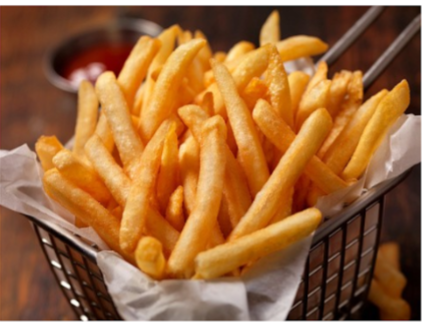

Patatas fritas
Receta de papatas fritas caseras.

Ingredientes
3 o 4 patatas (300g)
4 dientes de ajo
Aceite de oliva
Sal
Elaboración (Pasos)
Calentar aceite en una sartén.
Añadir las patatas cortadas, la sal y los ajos.
Freir al gusto.
Servir en el plato.